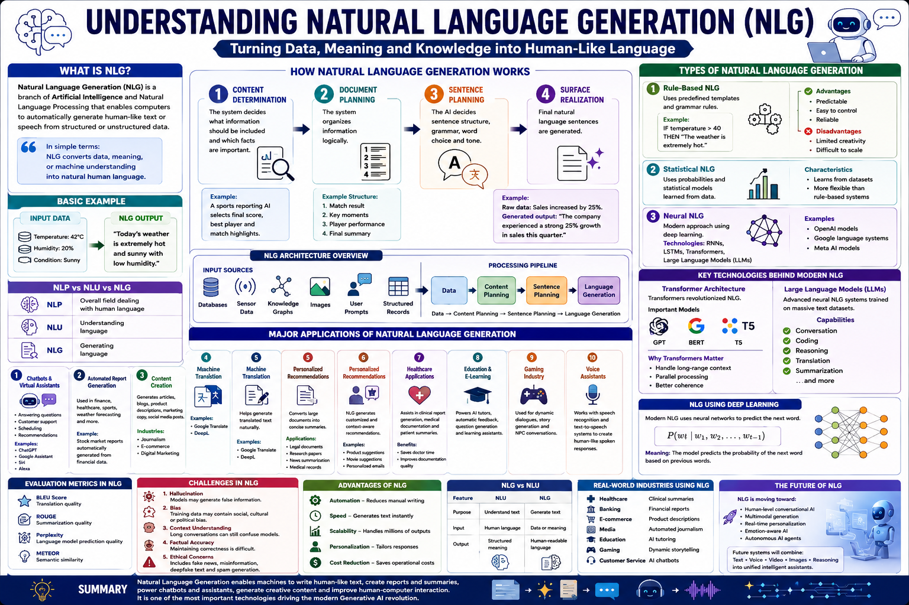

Master the transformer decoder hyperparameters that power modern text generation — from attention heads to warmup schedules.
Natural Language Generation (NLG) uses autoregressive transformer decoders to produce coherent, context-aware text. This guide covers the 10 most important hyperparameters for NLG models, from attention heads and embedding size to learning rate warmup and label smoothing, with practical PyTorch examples and a runnable GPT-style training demo.

x1, x2, …, xtAttention(Q,K,V)Softmax → P(xt+1)📊 NLG pipeline — tokenization, masked self-attention, and next-token probability prediction
Number of parallel attention heads in each multi-head attention layer. More heads capture more diverse token relationships.
Number of stacked transformer decoder blocks. Deeper models learn richer linguistic representations but are harder to train.
Dimensionality of token embeddings and hidden states throughout the decoder. Larger embeddings capture more nuanced semantics.
Probability of dropping activations during training. Applied to attention weights, residual connections, and embeddings.
The peak learning rate after warmup. Transformer decoders are sensitive to LR — too high causes instability, too low stalls learning.
Number of sequences per gradient update. NLG models benefit from large batches for stable gradient estimates.
Gradually increases the learning rate from near-zero to the peak value. Critical for transformer stability early in training.
AdamW decouples weight decay from the Adam update, improving generalization. The standard optimizer for GPT-style NLG models.
Maximum token length processed by the model. Longer contexts capture more text but increase memory quadratically (O(n²) due to attention).
Next-token prediction uses cross-entropy loss. Label smoothing prevents overconfidence by softening the target distribution.
Modern NLG models use a stack of transformer decoder blocks. Each block applies masked self-attention followed by a feed-forward network, with residual connections and layer normalization. The causal mask ensures each token only attends to previous tokens, enabling autoregressive generation.
Understanding the attention mechanism and autoregressive structure is key to tuning NLG model performance.
GPT models use decoder-only transformers — no encoder stack. The decoder handles both representation learning and generation in a single stack of layers.
During inference, tokens are generated one at a time, with each new token appended to the context for predicting the next. This sequential process defines NLG.
NLG training uses teacher forcing and careful learning rate scheduling to stabilize the autoregressive objective.
Linear warmup followed by cosine or linear decay. The schedule is as important as the peak LR value for transformer convergence.
During training, the ground-truth previous tokens are fed as input regardless of model predictions. This stabilizes early training.
Simulates larger batch sizes by accumulating gradients over multiple micro-batches before updating weights. Essential for GPU-memory-constrained NLG training.
Uses half-precision floating point to reduce memory and speed up training. Nearly all modern NLG models train with mixed precision.
Transformer decoders are prone to overfitting on small datasets. These techniques improve generalization and calibration.
Softens the one-hot target distribution, distributing probability mass to non-target tokens. Improves calibration and reduces overconfidence.
AdamW's decoupled weight decay penalizes large weights without interfering with the adaptive learning rate. Crucial for NLG generalization.
Dropout is applied at three points in GPT: embedding dropout, attention dropout (on softmax weights), and residual dropout (after each sublayer).
Clips gradients to a maximum norm to prevent loss spikes. Standard for training large transformer decoders stably.
A minimal GPT decoder training script. All hyperparameters annotated with numbered labels matching the cards above.
⬆️ Complete GPT decoder training loop. All ⑩ hyperparameters annotated. Causal masking + GELU activation + Pre-LN architecture.
| # | Hyperparameter | Purpose | Typical Range / Values |
|---|---|---|---|
| ① | Attention Heads | Parallel attention projections for diverse token relationships | 8, 12, 16 |
| ② | Decoder Layers (Depth) | Stacked transformer blocks for hierarchical representations | 6–12 (small), 24–96 (large) |
| ③ | Embedding Size (d_model) | Token representation dimensionality; hidden state size | 512, 768, 1024, 1600 |
| ④ | Dropout Rate | Regularization on attention, embeddings, and residuals | 0.1, 0.2, 0.3 |
| ⑤ | Learning Rate (Peak) | Maximum LR after warmup; critical for transformer stability | 3e-4 to 1e-3 (GPT: 6e-4) |
| ⑥ | Batch Size | Sequences per update; larger is more stable for NLG | 32–512 (effective) |
| ⑦ | Warmup Steps | Gradual LR increase; prevents early divergence | 1000–4000 (GPT: 2000) |
| ⑧ | Optimizer (AdamW) | Decoupled weight decay for better generalization | AdamW with β=(0.9, 0.95) |
| ⑨ | Sequence Length | Context window; O(n²) memory cost in attention | 256–2048 (GPT-2: 1024) |
| ⑩ | Loss + Label Smoothing | Cross-entropy with soft targets; improves calibration | CE + ε=0.1 smoothing |
Discovered automatically during autoregressive training
Set manually before training begins
Use these defaults as your first experiment baseline:
🔬 Tune from here: first adjust learning rate and warmup, then model depth, then batch size and dropout.
| Feature | GPT (Decoder-Only) | BERT (Encoder-Only) | T5 (Encoder-Decoder) |
|---|---|---|---|
| Attention | Causal (unidirectional) | Bidirectional | Bidirectional enc + causal dec |
| Generation | ✅ Native autoregressive | ❌ Not designed for generation | ✅ Seq2seq generation |
| Pretraining | Next-token prediction | Masked language modeling | Span corruption |
| Parameters | Fewer (single stack) | Fewer (single stack) | More (dual stack) |
| Best For | Open-ended NLG, chat, stories | Classification, NER, QA | Translation, summarization |
Test your knowledge with 25 questions covering NLG architecture, transformer hyperparameters, and training strategies.